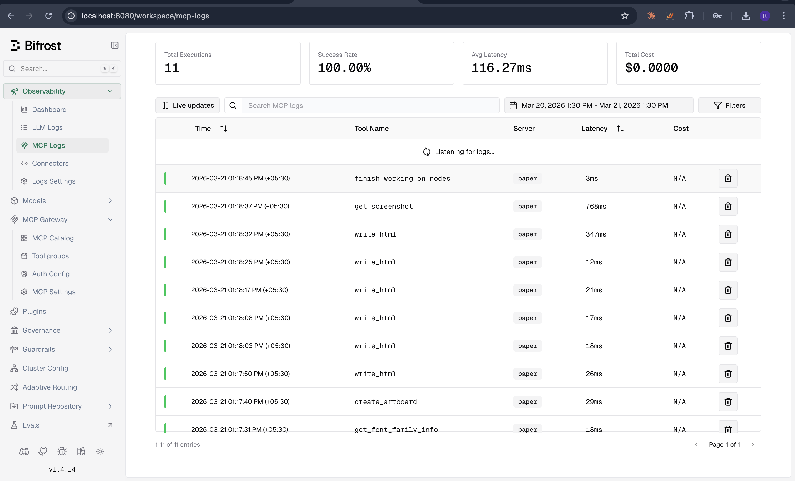
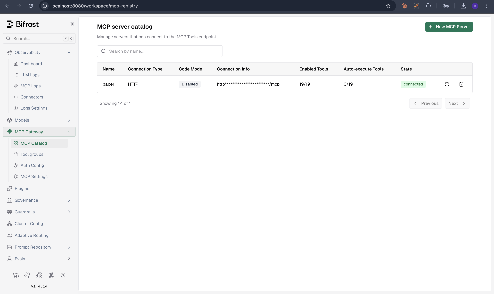

Priority 01
MCP cost attribution, the unsolved problem
Looking at the enteprise business case: a Product Design leader running a Paper.design pilot through Bifrost's MCP gateway can view MCP tool calls in Bifrost. They can also see that the session cost $0.53 in LLM spend. What they can't see is which tools drove which costs.
Bifrost's MCP gateway captures tool calls but so do Portkey & LiteLLM. LiteLLM has gone a step further with manual per-tool cost assignment, where you predefine a fixed cost per tool call in config. This validates a market need. But nobody has solved automated LLM cost attribution yet, where actual token spend is traced back to the tool call that triggered it.
I verified this across three layers:

| Layer | What it shows | MCP cost visible? |
|---|---|---|
| Bifrost MCP Logs | 11 tool calls, $0.00 total cost | No |
| Bifrost LLM Logs | $0.53 total for the session | No. Cost isn't linked to which tool triggered it |
| Maxim Traces | Tool calls visible as function_call in output | No. Buried in raw JSON, no per-tool cost span |
| Bifrost SQLite schema | mcp_tool_logs.llm_request_id column exists | The foreign key is designed but NULL |
A developer looking at MCP Logs thinks "free." An engineering leader looking at LLM Logs sees "$0.53" but can't tell which tool caused it. Neither layer tells the full story.
Upon exploring the code, it seems like the infrastructure for this is already partially built. The llm_request_id column exists in mcp_tool_logs. So the correlation exists, but doesn't seem like it was populated. From the outside in, the foundation already exists.
Where this should live
Bifrost (free)
Populate llm_request_id in mcp_tool_logs. Show basic per-tool metrics: call count, latency, success rate. Surface a signal: "11 tool calls from Paper.design. See cost impact in Maxim."
Maxim (paid)
Enriched trace view with MCP tool calls as child spans with attributed cost. Per-tool LLM cost dashboard. Team-level projections and budget alerts.
The free tier makes the problem visible. The paid tier aims to answer/connect the dots.
The key problem statement: How does the Product Design lead make a conscious decision? Without per-tool cost attribution, a team running & using MCP tools can't answer basic questions: Which MCP servers are worth the cost? Which tools should have budgets? Where are the runaway costs before they hit finance's radar?
At enterprise scale, the numbers compound. Based on my runs - a single Paper.design session cost me $0.53 in LLM spend. A team of 50 developers/designers using 3 MCP servers daily pushes this cost past ~$15,000/year, all invisible. MCP tools' impact on LLM spend is invisible today and it seems nobody has solved it so far.
Code Mode: cost optimization without cost measurement
Bifrost's Code Mode claims 50% token reduction for multi-server setups by replacing MCP tool schemas with 4 meta-tools. The 50% claim targets setups with 3+ servers and 150+ tools. But Bifrost provides no built-in way to measure whether Code Mode is working. No "saved you X tokens this session" metric anywhere in the dashboard. Without measurement or baseline establishment, Code Mode's core value proposition feels diminished.
| Metric | Classic Mode | Code Mode | Delta |
|---|---|---|---|
| Cost per request | $0.065 | $0.067 | +3% (no savings) |
| Avg prompt tokens/request | 57,776 | 60,621 | +5% (worse) |
The above results are with just 1 server / 19 tools, below the recommended 3+ servers / 150+ tools where cost reduction becomes real. The baseline & improvement measurement gap identified still applies here.
Being able to attribute cost enables two things: allows MCP tool call cost contribution visibility AND makes it possible to validate whether Bifrost's own cost optimization feature - Code Mode is delivering value.
Priority 02
Agent reliability on agentic workloads
Bifrost positions itself as agent infrastructure: "Launch any coding agent through Bifrost." The default configuration and CLI tooling both revealed gaps during my test runs.
Reliability
- HTTP 500 errors and timeouts during extended Claude Code sessions run via the Bifrost CLI. Root cause: goroutine leaks on context cancellation (#828, open 5 months) plus a default timeout of 30 seconds (#1157, #1406). A 30-second timeout on a product built for multi-minute agentic tool chains. That's a mismatch between positioning and defaults.
CLI governance gap
The Bifrost CLI config supports only 3 fields: base_url, default_harness, default_model. No mechanism for flag passthrough. I typically always run Claude Code with --dangerously-skip-permissions. The same can apply to other developers too but the point is - flexibility to do so is missing. I found no prior reports or a feature request for this in GitHub issues.
Recommendations
Prioritize the goroutine leak fix (#828).
Add agent_flags or extra_args to CLI config, or support -- separator for passthrough args
These are primary use cases for developers & enterprises evaluating the AI gateway or the Bifrost CLI. Running into HTTP 500 errors during a long coding session is a developer who will uninstall. The CLI is the acquisition channel for the enterprise offering. If it's unreliable or strips developer configuration, power users can choose to skip using it.
Priority 03
OSS to Enterprise - Conversion funnel polish
During my evaluation, I found that the OSS AI gateway-to-platform conversion path is functional but the discoverability friction is real.
My initial Bifrost and Maxim docs research suggested three high-severity integration gaps: no Web UI method for the Maxim plugin, a config.json file reliance, and a missing tutorial. I tested each one directly. The actual product experience was better than the documentation indicated. The Connectors page under Observability in Bifrost has a working Maxim integration with a simple setup flow. I revised my assessment accordingly. The remaining friction is about discoverability.
Work email signup can block developer conversion
Each developer Bifrost acquires (solo dev, indie hacker) gets blocked at Maxim signup. The work email requirement filters for enterprise leads but blocks the developer-led adoption that the OSS gateway is designed to drive. Braintrust, Langfuse, and Helicone all allow personal emails for free tiers.
Plugins vs Connectors confusion
The Plugins page (custom .so files) and the Connectors page (built-in integrations like Maxim) are separate UI locations. A developer who finds the Plugins page first will think Maxim integration requires a compiled plugin. This was my assumption too.
What I'd do
Allow personal email signup for Maxim. Maybe introduce a free Developer tier (10K logs, 3-day retention, low abuse risk)
Consolidate or cross-link the Plugins and Connectors pages for clarity.
What Works
Where Bifrost wins
1. Zero-config observability that actually works
I pointed my OpenAI SDK at localhost:8080/openai/v1, changed nothing else, and Bifrost captured everything. 88% capture rate (15 of 17 fields, 2 were not configured hence the 88%) for both OpenAI and Anthropic. Zero discrepancies between providers. Token counts matched the SDK's response objects exactly.
Competitors like Langfuse and Braintrust require SDK instrumentation. Bifrost captures the same data by sitting in the network path. For a team that can't afford to instrument every service, this is genuinely faster.
2. Drop-in provider abstraction
Same code, same SDK, one base_url change. OpenAI gpt-4o-mini (1602ms) and Anthropic claude-opus-4-6 (4433ms) both worked through the same endpoint. Bifrost translated the OpenAI chat format to Anthropic's native API transparently.
3. MCP gateway: first mover in an emerging category
Bifrost was among the first AI gateways to ship MCP gateway functionality. Portkey followed in January 2026, and LiteLLM has open-source MCP proxy support. Bifrost's implementation is the most integrated with a broader observability platform: register servers through a Web UI, discover tools automatically, log every tool call. I registered Paper.design (19 MCP tools), Bifrost discovered all of them and logged every call with tool name, arguments, result, latency, and status.

4. Maxim integration works
The Connectors page under Observability has Maxim as a built-in integration. API key, log repository ID, enable toggle, save. Traces flow automatically. Maxim's dashboard shows cost, tokens, latency, model tags, full input/output, and error details for every request.
Evidence
Methodology
| Activity | Evidence |
|---|---|
| Installed Bifrost, configured 2 providers | config/bifrost-config.json |
| Claude Code session through Bifrost CLI | 84 requests captured |
| Multi-provider routing + failover test | Both providers PASS, no auto-fallback |
| Auto-capture observability verification | 88% capture rate, 0 discrepancies |
| MCP gateway: Paper.design (19 tools) | 11 MCP tool calls, 22 LLM requests |
| Bifrost → Maxim end-to-end pipeline | Traces flowing, cost + tokens visible |
| Code Mode vs Classic Mode comparison | No savings at 1 server / 19 tools |
| Friction log (8 points) | setup/friction-log.md |
| GitHub issues + community analysis | 89 open issues analyzed |
What was not tested
Streaming under load, semantic caching, adaptive routing, guardrails, Code Mode at scale (3+ servers / 150+ tools), high-concurrency testing, and HA clustering. These are gaps in my evaluation, not confirmed problems.
Environment
Bifrost v1.4.14 · macOS · npx install · Python 3.11 · OpenAI SDK · Paper.design v0.1.10 (19 tools) · SQLite direct queries
About
Reehan Ahmed. Senior Platform Product Manager at Whatfix, I've spent 4+ years building the AI-native context detection platform that powers all Whatfix products. The most counterintuitive thing I've learned is when NOT to use AI. Achieved a 10x improvement in context detection by rigorous algorithmic improvements, in the pre-LLM era.